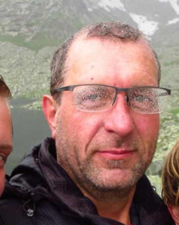

A máte vymalováno
Stovky spokojených zákazníků a více jak dvacetiletá historie naší firmy nás opravňuje řadit se ke špičce mezi brněnskými malíři. Při naší práci klademe důraz na Vaši spokojenost, vysokou kvalitu odvedeného díla a nízkou cenu. Odborné poradenství i nezávaznou cenovou kalkulaci poskytujeme samozřejmě zdarma. Zaměřujeme se především na malování kanceláří, bytů, škol, internátů, úřadů a rodinných domků, ke každé zakázce ovšem přistupujeme individuálně a snažíme se splnit všechna Vaše přání. Malování zvládneme hravě i v místnostech s koberci a po domluvě provedeme i úklid. Kromě malování jsme schopni zajistit i zednické a podlahářské práce.
Ceník
| MATERIÁL | KČ/M2 |
|---|---|
| Malba - Primalex Standart, Remal Standard | 18,- |
| Malba - Primalex Plus, Remal Plus | 21,- |
| Malba - Superlex - bělejší než Primalex Plus | 20,- |
| Malba - Primalex Polar, Remal Sněhobílý | 29,- |
| Malba - HET, Jupol | 29,- |
| Broušení nové omítky | 4,- |
| Penetrace | 12,- |
| Tónování dle sytosti | 5,- |
| Stěrkování dvojnásobné | 130,- |
| Zakrývání nábytku atd. | 160,- KČ/H |
| Nástřik Variopaint | 170,- |
| Přetírání olejových soklů | 90,- |
| Radiátory - 2 vrstvy (nástřik) | 28,- |
| Nátěry fasád - dle podkladu a materiálu | 80,- |
| Nátěry oken - dle materiálu | 190,- |
| Nátěr střech, plechů | 100,- |
| Nátěry dveří | 180,- |
| Nátěry trubek do průměru 50 mm | 25,- |
| Nátěry trubek do průměru 200 mm | 45,- |
| Nátěry betonových podlah | 120,- |
| Doprava po Brně | zdarma |
kontakt
 | +420 775 918 330 |
 | malby.pokoju@seznam.cz |
Kontaktujte nás na výše uvedeném telefonním čísle nebo e-mailové adrese ještě dnes a my vtiskneme Vašemu domovu novou tvář.